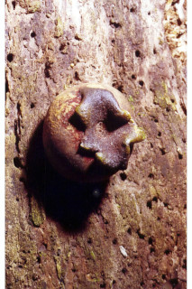
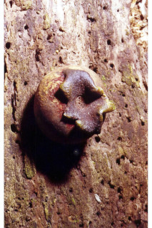

Botanical descriptions:
ಸಸ್ಯದ ವೈಜ್ಞಾನಿಕ ವಿವರ:
Botanical descriptions:
மரங்களின் பண்புகள்:
Habit:
ಪ್ರಕೃತಿ :
Habit:
வளரியல்பு:
Trees buttressed, up to 25 m tall.
25 ಮೀ. ಎತ್ತರದವರೆಗೆ ಬೆಳೆಯುವ ಆನಿಕೆಗಳುಳ್ಳ ಮರಗಳು.
വപ്രമൂലത്തോട്കൂടിയ, 25 മീറ്ററോളം ഉയരമുളള മരങ്ങള്.
தாங்கு வேர்களுடைய (பட்ரஸ்டு) மரம் 25 மீ. உயரம் வரை வளரக்கூடியது.
Trunk & Bark:
ಕಾಂಡ ಮತ್ತು ತೊಗಟೆ:
Trunk & Bark:
தண்டு மற்றும் மரப்பட்டை:
Bark smooth, black, flaky.
ತೊಗಟೆ ಕಪ್ಪು ಬಣ್ಣದಲ್ಲಿದ್ದು ನಯವಾಗಿರುತ್ತವೆ ಹಾಗೂ ಚಕ್ಕೆ ರೂಪದಲ್ಲಿರುತ್ತವೆ;
ഇളകിപ്പോകുന്ന, കറുത്തതും, മിനുസമാര്ന്നതുമായ പുറംതൊലി.
மரத்தின் பட்டை வழுவழுப்பானது, கருப்பு நிறமுடையது, வெடிப்புகளுடையது.
Branches and Branchlets:
ಕವಲುಗಳು ಮತ್ತು ಕಿರುಕೊಂಬೆಗಳು:
Branches and Branchlets:
கிளைகள் & சிறிய நுனிக்கிளைகள்:
Young branchlets terete, yellowish, with apical and axillary buds black, hairy.
ಕಿರುಕೊಂಬೆಗಳು ದುಂಡಾಗಿದ್ದು, ಹಳದಿ ಬಣ್ಣದಲ್ಲಿರುತ್ತವೆ; ಅಗ್ರದಲ್ಲಿನ ಹಾಗೂ ಅಕ್ಷಾಕಂಕುಳಿನಲ್ಲಿರುವ ಚಿಗುರು ಮೊಗ್ಗುಗಳು ಕಪ್ಪು ಬಣ್ಣ ಹೊಂದಿದ್ದು ರೋಮಸಹಿತವಾಗಿರುತ್ತವೆ.
കറുത്തതും രോമിലവുമായ അഗ്രമുകുളത്തോടും കക്ഷ്യമുകുളത്തോടും കൂടിയ, ഇളം ഉപശാഖകള് ഉരുണ്ടതും മഞ്ഞനിറത്തിലുമാണ്.
சிறிய நுனிக்கிளைகள் குறுக்குவெட்டுத் தோற்றத்தில் வளையமானது, மஞ்சள் நிறமுடையது, நுனி மற்றும் பக்கவாட்டிலுள்ள மொட்டுகள் கருப்பு நிறமுடையது, உரோமங்களுடையது.
Leaves:
ಎಲೆಗಳು:
Leaves:
இலைகள்:
Leaves simple, alternate, distichous; petiole 1-1.5 cm long; lamina 8.5-20 x 3-7 cm, elliptic-oblong to elliptic-lanceolate, apex acute to acuminate with blunt tip, base acute to attenuate, coriaceous, glabrous; midrib canaliculate above, stout beneath; secondary_nerves 5-9 pairs, lower pairs closer than above ones; tertiary_nerves strongly reticulate on both surfaces.
ಎಲೆಗಳು ಸರಳವಾಗಿದ್ದು ಪರ್ಯಾಯ ಹಾಗೂ ಸುತ್ತು ಜೋಡನಾ ವ್ಯವಸ್ಥೆ ಯಲ್ಲಿದ್ದು ಕಾಂಡದ ಎರಡೂ ಕಡೆಯ ಎದುರು ಬದರಿನ ಸಾಲಿನಲ್ಲಿರುತ್ತವೆ; ಎಲೆ ತೊಟ್ಟುಗಳು 1ರಿಂದ 1.5 ಸೆಂ.ಮೀಉದ್ದವಿರುತ್ತವೆ. ಪತ್ರಗಳು 8.5 -20 X 3-7 ಸೆಂ.ಮೀ. ಗಾತ್ರ, ಅಂಡವೃತ್ತ-ಚತುರಸ್ರ ದಿಂದ ಅಂಡವೃತ್ತ –ಭರ್ಜಿಯ ಆಕಾರ, ಚೂಪಾದುದರಿಂದ ಮೊಂಡಾದ ಅಗ್ರವುಳ್ಳ ಕ್ರಮೇಣ ಚೂಪಾಗುವ ತುದಿ, ಚೂಪಾದುದರಿಂದ ಒಳಬಾಗಿದ ಬುಡ, ತೊಗಲನ್ನೋಲುವ ಮೇಲ್ಮೈ ಹೊಂದಿದ್ದು ರೋಮರಹಿತವಾಗಿರುತ್ತವೆ; ಮಧ್ಯನಾಳಗಳು ಪತ್ರದ ಮೇಲ್ಭಾಗದಲ್ಲಿಕಾಲುವೆ ಗೆರೆಗಳನ್ನೊಳಗೊಂಡಿರುತ್ತವೆ ಹಾಗೂ ತಳ ಭಾಗದಲ್ಲಿ ದಪ್ಪನಾಗಿರುತ್ತವೆ; ಎರಡನೇ ದರ್ಜೆಯ ನಾಳಗಳು 5 ರಿಂದ 9ಜೋಡಿಗಳಿದ್ದು, ತಳಗಿನ ಜೋಡಿಗಳು ಮೇಲಿನ ಜೋಡಿಗಳಿಗಿಂತ ಹೆಚ್ಚು ಸನಿಹವಾಗಿರುತ್ತವೆ; ಮೂರನೇ ದರ್ಜೆಯ ನಾಳಗಳು ಪತ್ರದ ಎರಡೂ ಬದಿಯಲ್ಲಿ ಜಾಲಬಂಧನಾಳ ವಿನ್ಯಾಸದಲ್ಲಿರುತ್ತವೆ .
ലഘുവായ ഇലകള്, ഏകാന്തരമായി, തണ്ടിന്റെ ഇരുഭാഗത്ത് മാത്രമായടുക്കിയ വിധത്തിലാണ്; ഇലഞെട്ടിന് 1 മുതല് 1.5 സെ.മീ നീളം; പത്രഫലകത്തിന് 8.5 സെ.മീ മുതല് 20 സെ.മീ വരെ നീളവും 3 സെ.മീ മുതല് 7 സെ.മീ വരെ വീതിയുമാണ്, ദീര്ഘവൃത്താകാര - ആയതാകാരം തൊട്ട് ദീര്ഘ വൃത്താകാര - കുന്താകാരംവരെയാണ് ആകൃതി, പത്രാഗ്രം നിശിതം മുതല് മുനപ്പില്ലാത്ത ദീര്ഘാഗ്രം വരെയാണ്, പത്രാധാരം നിശിതം മുതല് സാവധാനം നേര്ത്തവസാനിക്കുന്നത്. വരെയാണ്, ചര്മ്മില പ്രകൃതം, അരോമിലം; മുഖ്യസിര മുകളില് ചാലോട്കൂടിയതും, കീഴെ ദൃഢവുമാണ്; ദ്വീതീയ ഞരമ്പുകള് 5 മുതല് 9 വരെ ജോഡികള് താഴത്തെ ജോഡികള് മുകളിലുളളവയെക്കാള് അടുത്തതാണ്; ത്രിതീയ ഞരമ്പുകള്, ഇരുഭാഗത്തും കനത്തില്, ജാലിതമാണ്.
இலைகள் தனித்தவை, மாற்றுஅடுக்கமானவை, இருநெடுக்கு வரிசையிலையடுக்கம் (டைஸ்டிக்கஸ்); இலைக்காம்பு 1-1.5 செ.மீ; இலை அலகு 8.5-20 X 3-7 செ.மீ. நீள்வட்டம்-நீள்சதுரம் முதல் நீள்வட்ட-ஈட்டி வடிவம், அலகின் நுனி கூரியது முதல் வால் போன்று நீண்டு முனை மழுங்கியது, அலகின் தளம் கூரியது முதல் அட்டனுவேட், கோரியேசியஸ், உரோமங்களற்றது; மையநரம்பு மேற்பரப்பில் அலகின் பரப்பைவிட பள்ளமானது, தளப்பகுதியில் பருத்தது; இரண்டாம் நிலை நரம்புகள் 5-9 ஜோடிகள், தளத்திலுள்ள ஜோடி நரம்புகள் நெருக்கமானவை; மூன்றாம் நிலை நரம்புகள் வலைப்பின்னல் அமைப்பு கொண்டது, நரம்புகள் கீழ்பரப்பு மற்றும் மேற்பரப்பில் தெளிவாக காணப்படும்.
Inflorescence / Flower:
ಪುಷ್ಪಮಂಜರಿ/ಹೂಗಳು:
Inflorescence / Flower:
மஞ்சரி / மலர்கள்:
Flowers dioecious; male flowers axillary, 3-8 in cymes; female flowers solitary, axillary with on short pedicels.
ಗಂಡು ಮತ್ತು ಹೆಣ್ಣು ಹೂಗಳು ಪ್ರತ್ಯೇಕ ಸಸ್ಯಗಳಲ್ಲಿರುತ್ತವೆ; ಗಂಡು ಹೂಗಳು (3ರಿಂದ8)ಅಕ್ಷಾಕಂಕುಳಿನಲ್ಲಿನ ಮಧ್ಯಾರಂಭಿ ಪುಷ್ಪಮಂಜರಿಯಲ್ಲಿರುತ್ತವೆ; ಹೆಣ್ಣು ಹೂಗಳು ಕಿರಿದಾದ ತೊಟ್ಟು ಹೊಂದಿದ್ದು ಅಕ್ಷಾಕಂಕುಳಿನಲ್ಲಿ ಒಂಟಿಯಾಗಿರುತ್ತವೆ,
പൂക്കള് ഡയീഷ്യസാണ്; ആണ്പൂക്കള് 3 മുതല് 8 വരെ എണ്ണമുളള കക്ഷീയ സൈമുകളിലുണ്ടാകുന്നു; പെണ്പ്പൂക്കള്, ഒറ്റക്കായി, കക്ഷങ്ങളില് കുറിയ തണ്ടുകളിലുണ്ടാകുന്നു.
ஓர்பால் மலர்கள்; ஆண்மலர்கள் இலைக்கோணங்களில் காணப்படும், 3-8 மலர்கள் கொண்ட சைம்; பெண்மலர்கள் தனித்தவை, இலைக்கோணங்களில் காணப்படும் மற்றும் சிறிய மலர்காம்புடையது.
Fruit and Seed:
ಕಾಯಿ /ಬೀಜ:
Fruit and Seed:
கனி / விதை:
Berry, globose, up to 7 cm in diameter, rusty brown scurfy_tomentum, fruiting_calyx foliaceous, densely black haired inside; seeds 8.
ಬೆರ್ರಿಗಳು7 ಸೆಂ. ಮೀ. ವ್ಯಾಸ ಹೊಂದಿದ್ದು ಗೋಳಾಕಾರದಲ್ಲಿರುತ್ತವೆ ಹಾಗೂ ತುಕ್ಕುಮಿಶ್ರಿತ ಕಂದು ಬಣ್ಣದ 22222(scurvy) ದಟ್ಟ ಮೃದುತುಪ್ಪಳದಿಂದ ಕೂಡಿರುತ್ತವೆ ;ಕಾಯಿಗಳ ಪುಷ್ಪಪಾತ್ರೆ ಎಲೆರೂಪದಲ್ಲಿದ್ದು ಒಳಭಾಗದಲ್ಲಿ ದಟ್ಟವಾದ ಹಾಗೂ ಕಪ್ಪು ರೋಮಗಳನ್ನೊಳಗೊಂಡಿರುತ್ತವೆ; ಬೀಜಗಳು 8.
8 വിത്തുകളുള്ള കായ, 7 സെ.മീ വരെ വ്യാസമുളള, തുരുമ്പന് രോമിലമായ, ഗോളാകാര ബെറിയാണ്, കായോട് ചേര്ന്നു നില്ക്കുന്ന ബാഹ്യദളം അകത്ത് കനത്തില് കറുത്ത രോമങ്ങള് നിറഞ്ഞ, ഇലപോലുളളതാണ്.
முழுச்சதைகனி (பெர்ரி), உருண்டையானது, 7 செ.மீ. குறுக்களவு கொண்டது, பொன் நிறமான மென்உரோமங்களுடையது, புல்லி இதழ்கள் இலை போன்றது, உட்பகுதியில் அடர்ந்த கருமையான உரோமங்களுடையது; 8 விதைகளை கொண்டது.
Literatures:
ಗ್ರಂಥ ಸೂಚಿ:
Literatures:
சான்று ஏடு:
Triman, Handb. Fl. Sri Lanka 6: 180. 1931; Singh, Monograph on Indian Diospyros L. (Persimmon, Ebony) Ebenaceae. 46. 2005.
Triman, Handb. Fl. Sri Lanka 6:180 1931;Singh, Monograph on Indian Diospyros L.(persimmon, Ebony)Ebenaceae 46.2005
Triman, Handb. Fl. Sri Lanka 6: 180. 1931; Singh, Monograph on Indian Diospyros L. (Persimmon, Ebony) Ebenaceae. 46. 2005.
Triman, Handb. Fl. Sri Lanka 6: 180. 1931; Singh, Monograph on Indian Diospyros L. (Persimmon, Ebony) Ebenaceae. 46. 2005.
 
